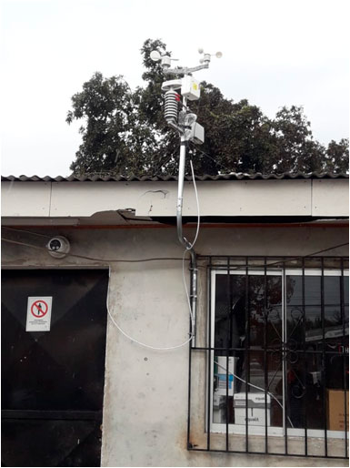
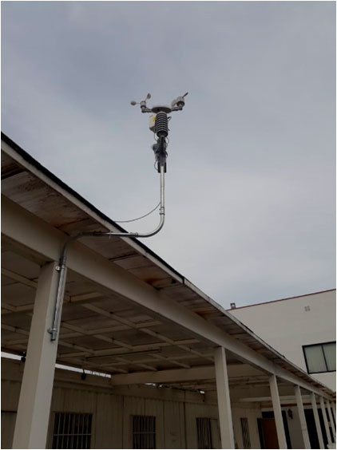
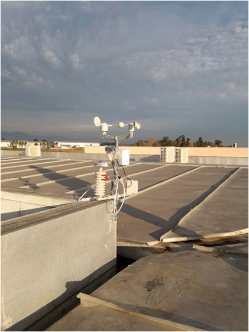

Curicó cuenta con ocho modernas estaciones de monitores de calidad del aire
curico.clProyecto FIC-R 40001091
Redes de monitoreo
de calidad del aire de bajo costo
para la región del Maule
Información General
Monto financiado por GORE región del Maule:
50 millones de pesos
Unidad ejecutora:
Facultad de Ciencias Forestales – Universidad de Talca
Institución patrocinante:
SEREMI de Medio Ambiente del Maule.
Director:
Dr. Ricardo Baettig P.
Académico de la Universidad de Talca.
rbaettig@utalca.cl
Colaboradores:
Dr. Jorge Cornejo Troncoso
Dra. (c) Catalina Radrigán Navarro
Participantes
Municipalidad de Curicó
Municipalidad de Rauco
Municipalidad de Romeral
Municipalidad de Teno
Municipalidad de Molina
Municipalidad de Sagrada Familia
Otros particulares y empresas vecinas al radio urbano de Curicó
Sistema de Monitoreo
Descripción
El valle central de la provincia de Curicó presenta problemas graves de contaminación del aire, debido al alto consumo de leña como combustible residencial, calefactores ineficientes, malas prácticas de operación, etc. De este modo, el monitoreo de la calidad del aire en la ciudad, indica altos índices de concentraciones de material particulado, que superan significativamente la norma primaria de calidad del aire. Dados estos antecedentes en el año 2015, fue declarada como zona saturada por MP2.5, llevando incluso a la autoridad sanitaria regional a la formulación de un Planes de Descontaminación Atmosférica – PDA. Cabe señalar que la fracción fina del material particulado o MP2.5, está compuesta por partículas suficientemente pequeñas que penetran en las vías respiratorias hasta llegar a los pulmones y los alvéolos, lo que aumenta el riesgo de mortalidad prematura por efectos cardiopulmonares, en exposiciones de corto y largo plazo. Los registros de MP2.5 realizados por el Ministerio del medio Ambiente (red SINCA) son caros en cuanto a inversión y mantención. Sin embargo, es factible mediante tecnología electrónica, innovar en el desarrollo de sensores de MP2.5 de bajo costo. Es por esto, mediante la postulación de los Fondos de Innovación para la Competitividad (FIC – 2017) del Gobierno Regional del Maule, La Universidad de Talca presentó la iniciativa denominada “Redes de monitoreo de calidad del aire de bajo costo para la región del Maule” (proyecto de carácter de Innovación Pública). El proyecto tiene un periodo de duración de 24 meses (mediciones durante 2 inviernos), donde se trabajara asociativamente con la Secretaría Regional Ministerial de Medio Ambiente del Maule como beneficiaria directa de la formulación. Los beneficiarios indirectos que serán alrededor de 250.000 habitantes de las 6 comunas, quienes podrán saber la calidad del aire que respiran. Se diseñó y se desplegará una red de monitoreo, que medirá en tiempo real la calidad del aire, en la provincia de Curicó (Curicó, Teno, Romeral, Rauco, Molina y Sagrada Familia) y mediante el uso de herramientas de modelación computacional de alto poder analítico; se hará factible desarrollar modelos precisos del comportamiento del aire, mediante la implementación de 20 estaciones de monitoreo de calidad del aire de bajo costo.
El objetivo general del proyecto será transferir a la SEREMI del Medio Ambiente del Maule un modelo de comportamiento de la contaminación por material particulado en función de las condiciones climáticas en todo el valle central de la provincia de Curicó, que está declarado zona saturada por material particulado respirable fino MP2.5 y cuyo PDA se encuentra en elaboración. Como objetivo específico se buscará validar un prototipo de red de monitoreo de calidad del aire de bajo costo, adaptado a las condiciones climáticas y de contaminación del aire invernal en Chile central.
El académico y director del proyecto es el profesor Ricardo Baettig de la Facultad de Ciencias Forestales de la Universidad de Talca. Finalmente, los esfuerzos mancomunados y el desarrollo tecnológico se verán reflejados en la colaboración para mejorar en la capacidad de predicción con respecto a la condición de calidad del aire, esta mejora se traduciría en una mejor asignación de las alertas ambientales que conllevan restricciones a las fuentes emisoras de humo. Mejorar la delimitación de las zonas restricción por humos visibles; actualmente ésta delimitación intenta cubrir aproximativamente las zonas de mayor concentración de población, sin embargo, no es seguro que la actual delimitación sea óptima. Mejorar en la programación o asignación de los fiscalizadores en terreno, en función de las evidencias concretas de eventuales hallazgos de zonas con alta emisión de material particulado y mejoras de largo plazo en el conocimiento del comportamiento del aire en el valle central de la provincia que sirva como retroalimentación a las acciones del Plan de Descontaminación Atmosférica.
Descarga de Documentos
Fotografías
Estación de monitoreo – M. Curicó
Estación de monitoreo – CESFAM Colón


Estación de monitoreo – SAR Bombero Garrido
Estación de monitoreo – CESFAM Los Aromos

Estación de monitoreo – J. Infantil
Estación de monitoreo – CESFAM Sarmiento
Estación de monitoreo – C. D. Santa Fe

Estación de monitoreo – M. Teno
Estación de monitoreo – CESFAM Romeral

Estación de monitoreo – D. O. Molina
Estación de monitoreo – S. Familia

Estación de monitoreo – F. Popular Rauco

Estación de monitoreo – Convento Viejo
Estación de monitoreo – Viña M. Torres
Estación de monitoreo – Utal Curicó

Difusión
Con Ocho modernas Estaciones de monitoreo de Calidad del Aire cuenta la comuna
maulealdia.clOcho modernas estaciones permiten monitorear la calidad del aire en Curicó
diariolaprensa.clCuricó cuenta con ocho modernas estaciones de monitores de calidad del aire
vivimoslanoticia.cl